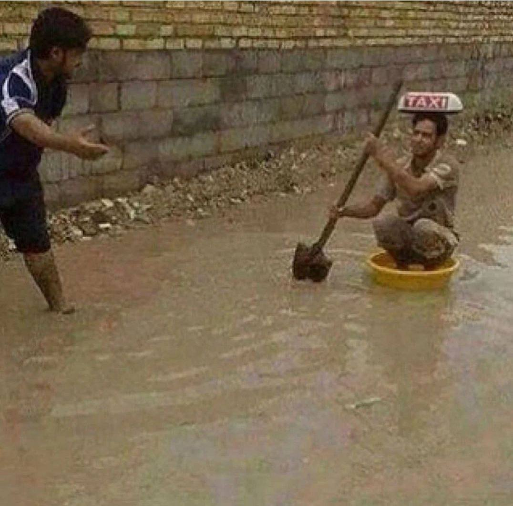

Commiternopedia
Группа(Коминтерн)
Комминтерн (от Коммунистический интернационал) - это неформальная группа рандомов из всего Казахстана, основанная 18 ноября 2022 года возле озера Щучье в общежитии школы IQHSB Нуралоном 1. Группа состоит из 20 человек, которые являются сигмами. На протяжении 10 месяцев состав комминтерна состоял из 11 человек Нуралон , Жаксим, Даксим, Каксим, Ращит, Данел, Ерпоп, Тапир, Нурдылда, Карман, Иглер

Free money
- Артем
- Шынгыс
- Влад
- Миша
- pepperonu
- Find a bo`oh`o`wo`oh
- find petrol
- find aceton
- find penoplast
- Умер
- Уснул, заболел, уехал